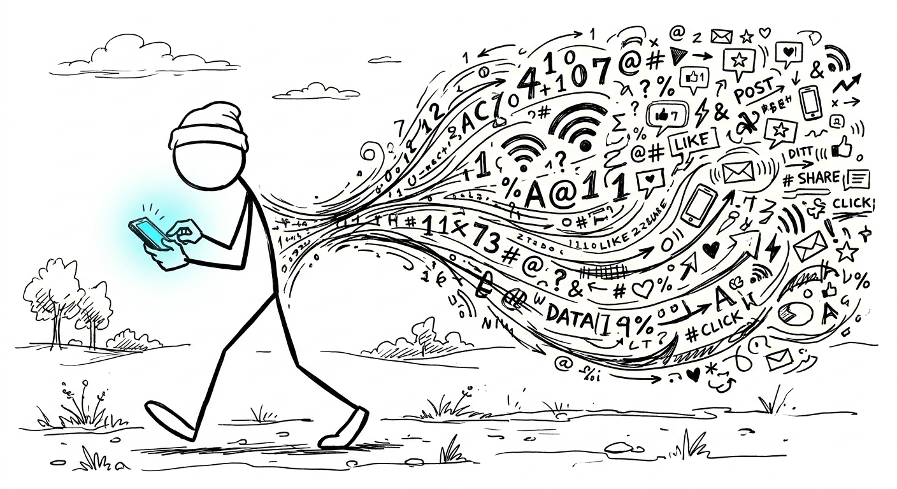

paths <- list.files("data", pattern = "StreamingHistory_music_\\d+\\.json",
recursive = TRUE, full.names = TRUE)
events <- lapply(paths, fromJSON) |>
bind_rows()Project 3: Your Life in Data

From the moment you wake to the moment you fall asleep, you are generating data. Each text you send, every video you watch, every scroll you scroll is being stored as data in a database somewhere. Even outside your phone - when you swipe into the gym, when you tap your card to pay for lunch, when you enter a room and the motion sensor triggers the light - these actions all generate data. This data is the focus of this project.
By completing this project, you will:
- Check what an event log records against a known series of actions
- Export your data from an app you use regularly and read it into R
- Clean and extract text with
stringrand regular expressions - Parse date-times, fix their time zone, and summarize events over time
- Join your event log to a table of your own
- Ask and answer a question of your own about your behavior
As always, you will be invited by email to a template repo corresponding to this project. Complete the project in that repository and commit and push all of your work before your project studio.
This time, project.qmd is set to format: revealjs, the slide format used in lecture, because you will present your work. Each part below opens with a title slide, and each lettered subpart gets two slides in the template, titled to match. The first shows your results only, as an explanatory display (a plot, a table, or a few sentences), and the second shows the code that produced them. The comment at the top of the template’s project.qmd shows how to set this up.
In the assignment below, the only thing that should show up in your project.qmd is what is asked for in “On Your Slide”. The questions are there to prompt you to fully explore this phase of the analysis to be ready to answer questions about it during the Project Studio.
ImportantDo not commit your data
Your data exports contain personal information about you and also about people that you correspond with. To prevent sharing this data, create a subdirectory of your template repo called data/ and unzip your personal data there. The template contains a small text file called .gitignore that lists this directory as one that git should ignore. The data-staff folder used in Part 1 holds staff data, not yours, and is already in the template.
Other relevant files, namely project.qmd, the corresponding project.html (that is your slide deck) and associated files should be committed and pushed.
Part 1: Staff YouTube Data
Before you analyze data you’ve generated over years, you’ll look at a small data set that we deliberately generated. A member of course staff took a short, scripted series of actions on YouTube and then downloaded what Google recorded using Google Takeout. The What We Did tab above lists every action. Because you know exactly what happened, you can check whether the data tells the same story.
The template’s data-staff/YouTube and YouTube Music/ folder holds that export, cut down to the files and records from those 33 minutes. Everything else in it is exactly as Google wrote it.
A. Predict
Before you open any of the files, use the What We Did tab to write down what you expect to find.
On your slide: your predictions, as a short list or table. This slide has no code, so it needs no code slide.
- How many records should the watch history hold, and for which videos?
- How many records should the search history hold?
- Which videos should be in the
stat133playlist, and which channels in the subscriptions?
B. Import
On your slide: the files in the export, and the first few rows of watches.
- List the files in
data-staff/YouTube and YouTube Music/withlist.files(..., recursive = TRUE). - Read
watch-history.jsonandsearch-history.jsoninto data frames calledwatchesandsearches. Read the three CSV files withread_csv()intoplaylists,stat133, andsubscriptions. - What does one row of each data frame represent?
- Some columns of
watchesare lists rather than simple vectors. Which ones? Which of them holds the channel, and what does each of its elements hold? - Why do you think
watch-history.jsonis stored as a JSON instead of a CSV?
C. Clean
On your slide: watches with the columns title, channel, video_id, artist, and song, and searches with the columns title and terms.
unnest()fromtidyrturns a list column of data frames into ordinary columns, one for each column inside:watches <- unnest(watches, subtitles, keep_empty = TRUE). (keep_empty = TRUEkeeps any row whose element is empty, filling it withNA, rather than dropping it.) What do the new columns hold? Rename the one with the channel name tochannel.- Use
stringrfunctions and regular expressions to remove"Watched "from the start of each title inwatches. - Extract each video’s ID from
titleUrlinto a columnvideo_id(it’s the part afterv=). - Extract the search terms from each
titleUrlinsearchesinto a columnterms. Compare them to the titles. In what two ways are the search terms written differently in the URL? Why do you think a URL can’t simply contain them as typed? - Split each watched title into an
artistand asongat" - ". For which title does this go wrong, and why?
D. Check the Times
On your slide: a table with one row per watch: the title, the recorded time in Pacific time, and the time in the What We Did tab that it matches.
- Convert
timeinwatchesto a date-time. In what time zone is it recorded? - Convert it to Pacific time and line each watch up with the What We Did tab.
- Which moment does YouTube record: when the page was opened and the ads began, when the video itself started, or when it ended? Use the one recorded watch that had an ad to tell these apart.
E. Join
On your slide: the video that was saved but never watched, the video that was watched but never saved, and the result of joining subscriptions to watches.
- Join
stat133towatchesby video ID. Useanti_join()to find the video that was saved but never watched, and the video that was watched but never saved. - Staff subscribed to the Khruangbin channel and then watched a Khruangbin video. Join
subscriptionstowatchesby channel name. Does the join find that video? Look back at the What We Did tab and explain what happened. - Neither subscription matched in question 2. Using the What We Did tab as well as the data, which subscribed channel was truly never watched?
F. Compare to the Record
On your slide: every action in the What We Did tab that left no trace in these files, as a list or table. This slide has no code, so it needs no code slide.
- Compare your findings to your predictions in A. Which action’s missing trace surprised you most?
- In a few sentences, describe what YouTube’s “watch history” actually records.
- What does that mean for counting events in your own data in Part 2?
Part 2: Your App, Your Data
In Part 1, everyone looked at the same data generated by the same behavior. Now you’ll have a look at data that captures your life in data. Pick an app or service you use regularly and whose data export has arrived (see the list of apps from the Reading and Writing Data lecture). Make multiple data requests because some take several days to arrive (note that Instagram generally arrives within minutes). Also keep an eye on your email: after the data request, you’ll usually get an email where you must confirm the request before they begin to process it.
This is not an exhaustive list of apps; if you are very active on an app not listed, if you’re able to secure the data in time, if the data contains multiple files including at least one JSON, and if it can be used to answer the following questions: it’s fair game. If you can’t figure out how to download your data from a given app, ask google or Gemini for help or post on Ed.
The questions below are written to work for almost any app, because almost every export contains at least one event log: a table/JSON with one row per thing you did (a song played, a video watched, a ride taken, a post liked) and a column recording when you did it.
A. Take Inventory
Before analyzing a data set, find out what’s in it. Unzip your export into data/ and list every file in it with list.files(..., recursive = TRUE).
On your slide: a table counting the files in your export by format, and the first few rows of events.
Which app did you choose? How many files are in your export, and how many of them are JSON, CSV, or some other format? Use
str_detect()with a regular expression to count them, rather than counting by hand.Skim the file names (and open a few in a text editor). Which file holds the event log you’ll analyze in the rest of this part? Which files look like they might contain something you didn’t expect the company to keep?
Read the event log into R as a data frame called
events. If it’s a JSON file,fromJSON()will usually return a data frame directly. If some of its columns are themselves data frames or lists (nested JSON), tryfromJSON(path, flatten = TRUE), which spreads nested fields into their own columns. Fields that hold a list of values (like YouTube’ssubtitlesin Part 1) stay list columns; useunnest(events, column, keep_empty = TRUE)as you did there. Comparenrow(events)before and after: if it grew, some elements held more than one row, and each event now appears more than once. If your event log is split across several files (e.g.StreamingHistory_music_0.json,StreamingHistory_music_1.json), you can read and stack them like this:Describe
events: how many rows and columns it has, what one row represents (the unit of observation), and a one-sentence description of each column you plan to use.
B. When Did It Happen?
Companies store times in many ways: as text in many formats, or as Unix time (seconds or milliseconds since 1970). Most also store them in UTC rather than your local time.
On your slide: a heatmap of your events by day of week and hour of day, in your local time, with the start, end, and span of your log in its title or subtitle.
Create a column
timeineventsthat holds each event’s date-time as aPOSIXctvector. Use thelubridatefunction that matches your timestamps (ymd_hms(),ymd_hm(),mdy_hm(), …). If your timestamps are numbers, they are Unix time:as_datetime(x)converts seconds, andas_datetime(x / 1000)converts milliseconds.Think of one event whose time you remember well (a song you played as you walked into an exam, a ride you took to the airport). Find it in
events. Is the recorded time in UTC or in your local time? Usewith_tz()orforce_tz()so thattimeis in"America/Los_Angeles"(or whichever time zone you were in), and explain which function you chose and why.When does your event log start and end, and how long a span of time does it cover? Express the span as a duration.
Use
wday()andhour()to count your events by day of week and hour of day, then display those counts as a heatmap withgeom_tile():events |> count(day = wday(time, label = TRUE), hour = hour(time)) |> ggplot(aes(x = hour, y = day, fill = n)) + geom_tile()What does this heatmap reveal about your routine? Would it look different if you hadn’t fixed the time zone in question 2?
C. What Did You Do?
Event logs also record what you did, usually as text: song and artist names, video titles, search terms, URLs, addresses. Text from apps is messy. The same thing can be written several ways.
On your slide: a bar chart of your top 10 most frequent values after cleaning, ordered by frequency.
- Choose a text column in
eventsthat identifies what each event was about. What are your top 10 most frequent values? - Look closely at the values in that column. Find at least one way the same thing is recorded in different forms (capitalization, extra words like “Watched” or ” - Remastered”, trailing spaces, URL parameters, …). Use
stringrfunctions and a regular expression to clean the column into a new one. - Redo your top 10 with the cleaned column and show it in a bar chart. Did it change?
D. Was I in Class?
To learn something new from a data set, you can often join it to another one. Here you’ll join your event log to a table only you can write: your class schedule this semester.
On your slide: a table of the number of distinct events that happened during each of your courses this semester.
- Create a data frame called
schedulewith one row per class meeting time: adaycolumn (matching the labels fromwday(time, label = TRUE), e.g."Mon"), acoursecolumn, andstartandendcolumns giving the time in hours (e.g. 2:00 pm is14, 3:30 pm is15.5). Include Stat 133. - Add two columns to
events:day, the weekday label oftime, andclock, the time of day in hours (hour(time) + minute(time) / 60;minute()works just likehour()). Then add anevent_idcolumn numbering the rows. Left joinscheduletoeventsbyday. How many rows does the result have? Why is it more thaneventshad? - Filter the joined data frame to events that happened during a class (
clockbetweenstartandend), restricted to dates during this semester. How many distinct events happened during class? Which course gets the most? - Is this a fair way to judge whether you were using the app in class? Name at least two reasons the join could overcount or undercount.
E. Your Question
You now know your event log well. Ask one question about your own behavior that the work above doesn’t already answer and that you are genuinely curious about. If you’re stuck, two kinds of question work for almost any app:
- How has a share of your events changed over time? Use
str_detect()to pick out a subset of events that matters to you (lectures or tutorials, songs by one artist, rides to or from campus), then plot the fraction of your events in that subset each month. - When are you most active, and has that shifted? Use
case_when()to label each event as"morning"(5 am to noon),"afternoon"(noon to 5 pm),"evening"(5 pm to 10 pm), or"night"(10 pm to 5 am), then compare the periods across months. Which month was your most nocturnal?
On your slide: your question and one explanatory plot that answers it.
- State your question in one sentence.
- Answer it with one explanatory plot: a clear title, labeled axes with units, and a scale and theme chosen to make the comparison you care about easy to see.
- Give your answer and the evidence for it, along with one limitation of what this data can tell you.
F. What Do They Know?
On your slide: the main points of your answer to question 1. This slide has no code, so it needs no code slide.
- Based on everything you found, what could the company infer about you (your schedule, location, interests, habits) from this export alone? Which inference would be easiest to get wrong, and why?
- Look back at the files in A.2 that you didn’t expect. Is there anything in your export you would ask the company to delete? Explain.
Course staff did the following on YouTube on Saturday, October 10, 2026, in a web browser on a laptop, signed in to a staff Google account. All times are Pacific Daylight Time. Autoplay was turned off, so YouTube never started a video on its own after another ended.
| Time | Action |
|---|---|
| 12:43:14 | Opened the 3Blue1Brown channel page and clicked Subscribe. Played nothing. |
| 12:43:20 | Searched for hans rosling 200 countries. |
| 12:43 | Clicked the result Hans Rosling’s 200 Countries, 200 Years, 4 Minutes - The Joy of Stats - BBC. The page stalled, and the video never started. |
| 12:44:06 | Clicked Save, then New playlist. Made a private playlist named stat133 with the Rosling video in it. |
| 12:50:17 | Reloaded the Rosling video. It started right away (no ad) and played to the end at 12:55:05. |
| 12:55:27 | Opened Khruangbin & Leon Bridges - Texas Sun (Official Video). Two 15-second ads played first (Fancy Feast, then Marriott Bonvoy). |
| 12:55:54 | Saved Texas Sun to stat133. |
| 12:56:05 | Clicked Subscribe. This video belongs to three channels (Dead Oceans, Khruangbin, and Leon Bridges), so YouTube asked which one; subscribed to Khruangbin. |
| 12:56:12 | Texas Sun itself started. It played to the end at 13:00:55, followed by two 30-second ads (Arizona State University, then Ticketmaster). |
| 13:02:34 | Opened Natalia Lafourcade - Tú sí sabes quererme (en manos de Los Macorinos). It started right away (no ad). |
| 13:02:42 | Clicked the thumbs-up (Like). |
| 13:02:55 | Saved it to stat133. It played to the end at 13:08:49, followed by an ad (St. Jude), skipped after about 20 seconds. |
| 13:09:25 | Opened Nina Simone - Sinnerman (Audio). It started right away (no ad). |
| 13:09:38 | Paused Sinnerman at 0:13. Didn’t save it. |
| 13:09:51 | Searched for 3blue1brown central limit theorem. The top result, But what is the Central Limit Theorem?, began a silent preview in the search results on its own. |
| 13:10:12 | Without opening it, saved the Central Limit Theorem video to stat133 from the ⋮ menu next to its title. |
| 13:14:29 | Searched for galton board. Clicked nothing. |
| 13:14:48 | Searched for hasta la raíz. Clicked nothing. |
| 13:15:08 | Opened stat133 and clicked Texas Sun. A 15-second ad played first (Home Depot). |
| 13:15:31 | Texas Sun started. |
| 13:16:35 | Paused Texas Sun at 1:04. |
At 13:16:35, stat133 held four videos, in this order: the Rosling video, Texas Sun, Tú sí sabes quererme, and the Central Limit Theorem video.
Staff then requested the data at takeout.google.com, selecting only YouTube and YouTube Music and choosing JSON (instead of the default HTML) for the history files. The export arrived within an hour.